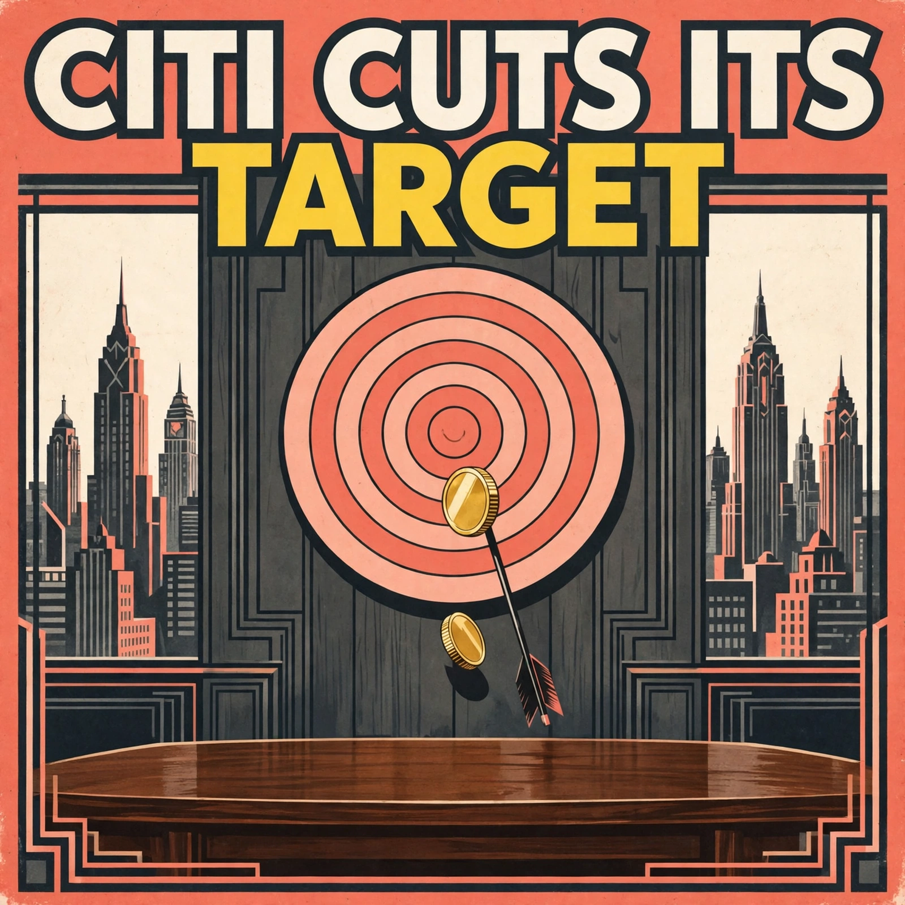
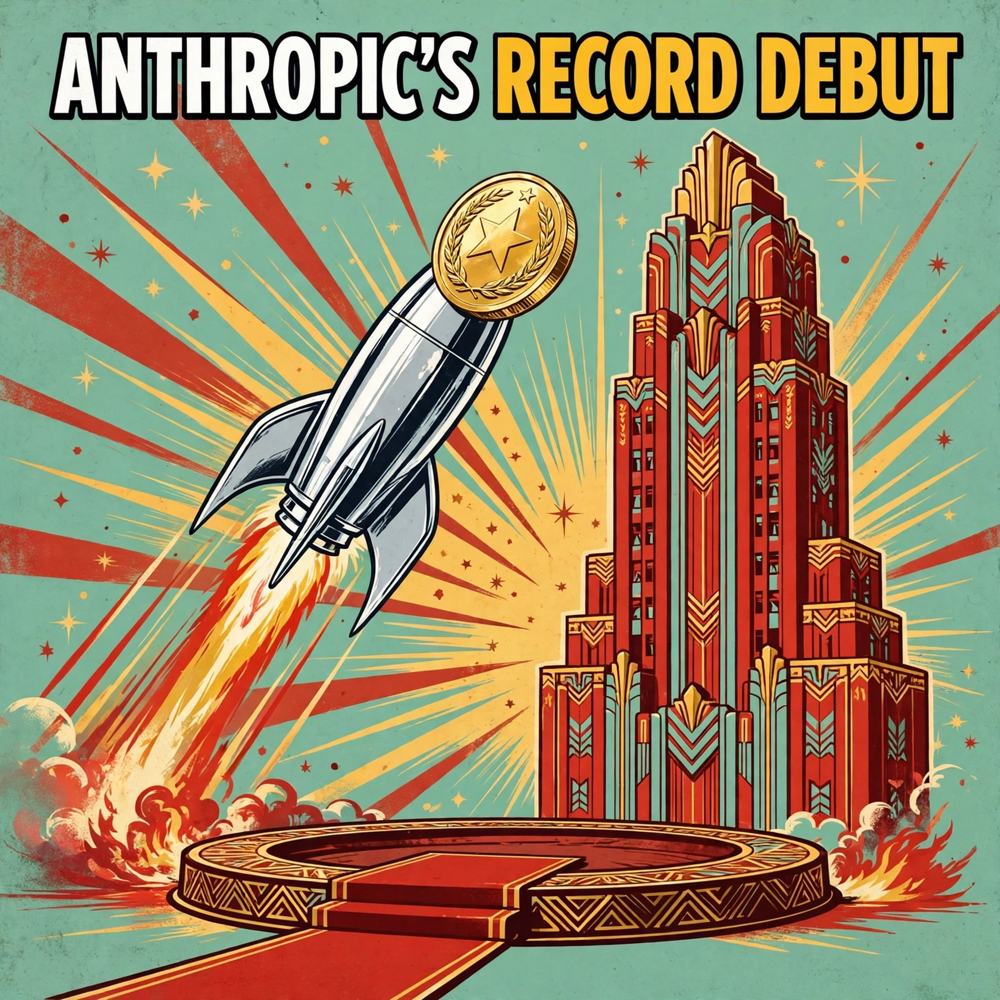
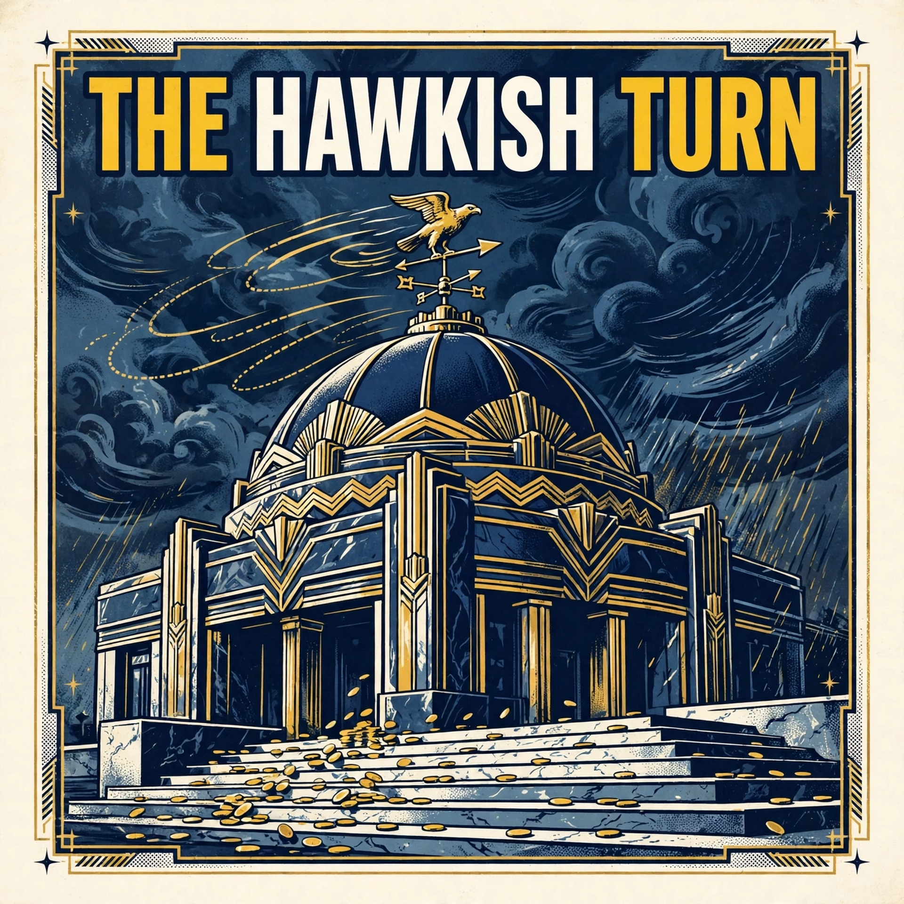

Bitcoin Stories — Thursday, Nov 19, 2026

Bitcoin broke below its 200-week moving average, trading near $62,387 after a 3.8% daily and 12% weekly drop — a rare weakness signal last seen in 2015, 2020 and 2022. The $62,000 area is now the line traders are watching, with the price at $63,065 and the Fear & Greed Index at 10, in extreme fear.
Read the full story →
Citigroup lowered its 12-month Bitcoin target to $99,532 from $113,000, blaming weak ETF demand. Bitcoin would need to rise about 55% from here to reach the new target, after falling 22% over the last 30 days.
Read the full story →
Spot Bitcoin ETFs saw $306 million of outflows on November 18, pushing the November total to $2,885.5 million across 13 trading days. Bitcoin is down 22.1% over 30 days and sits 49.5% below its $126,080 all-time high.
Read the full story →
Anthropic starts trading on Nasdaq today under the ticker ANT after pricing at $83 a share, in a deal raising US$107.3 billion — the largest IPO raise on record, ahead of SpaceX. The debut lands as AI names whipsaw the market and Nvidia slides after earnings.
Read the full story →
The Fed minutes turned hawkish: almost all officials see more rate hikes ahead, a few eye a move bigger than 25 basis points, and Governor Waller floated 50 basis points for December 9. A 25bp hike is about 95% priced in, the 10-year yield holds above 5%, and the S&P 500 has now fallen five straight sessions.
Read the full story →